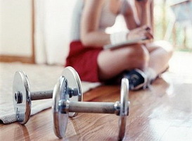

ПРОГРАММЫ ТРЕНИРОВОК

Для похудения
Первый день:
- Приседания- 5 подходов по сорок раз. Обратите внимание, ноги должны стоять на ширине ваших плеч, ступни параллельно друг другу, руки на приседании идут вперед вместе с грузом.
- Скручивания прямые (подтягивание плечевого пояса к тазу), с упором ногами в скамью – 2 подхода по 30 раз. Следите, чтобы амплитуда движений не была слишком велика, поскольку тогда будут работать тазобедренные мышцы и суставы, а не мышцы пресса. Скручивания – это одно из самых результативных упражнений из того, что предлагает программа тренировок для похудения боков и пресса.
- Подъем ног, согнутых в коленях, сидя на скамейке, руки с грузом вверху– 1 подход, 50 подъемов.
- Неглубокие приседания, ноги чуть уже ширины ваших плеч, спина прямая, руки на присест идут вперед – 3 подхода по 35-40 раз.
- Классическая тяга становая – один подход, 40 раз. Тяга проводится из положения, когда ноги чуть согнуты в коленях, ступни стоят на ширине ваших плеч, спину нужно держать прямо. Вес штанги (груза) в первые дни не должен превышать 1/10 вашего веса (80 килограммов вашего веса – не более 8 килограммов приспособлений). Кажется этот вес небольшим, но количество его подъемов с лихвой компенсирует кажущуюся легкость.
- Подъем на носки, руки на подъеме разводятся горизонтально в стороны – один подход, 50 раз. Это упражнение самое эффективное из всего того, что предлагает программа тренировок для похудения ног.
- Прямое скручивание – один подход, 30-40 раз до усталости.
Второй день:
- Классическая становая тяга – четыре сета по 35-40 раз.
- Скручивание прямое – два подхода по 35-40 раз.
- Обратные скручивания, которые работают на мышечную ткань живота, когда к плечам подтягивается таз, а не наоборот, как в простых скручиваниях. Положение горизонтальное, руки – хват за скамью в изголовье, ноги полусогнуты. Следите за малой амплитудой и тем, чтобы каждый раз поясница сначала прижималась к плоскости, а затем скручивающим рывком отрывалась от нее. Один сет по 35-40 раз.
- Средняя постановка ног, неглубокие приседания - два сета по 40 раз.
- Тяга в наклоне. Чтобы избежать травмирования, следите за тем, чтобы колени были немного согнуты, а спина не «круглилась». – один сет по 35-40 подходов.
- Простые прямые скручивания – 35-40 раз, один подход.
- Обратное скручивание, 35-40 раз, один подход.
- Упражнения на развитие грудных мышц – жим лежа, хват узкий. Три подхода по 25-30 раз.
- Становая тяга – три сета по 30 раз.
- Подъем на носки – два подхода по 35-40 раз.
- Прямое скручивание – столько, сколько сможете.
Третий день:
- В положении лежа жим, хват широкий – три сета по 20 раз.
- Прямое скручивание – 2 подхода, 30 раз.
- Повороты ногами с усилием – три подхода, 20 раз.
- Ноги на ширине плеч, присесты – два подхода, по 40 раз.
- Тяга с наклоном – два сета по30 раз.
- Прямое скручивание – один сет, 40 раз.
- Повороты ног – два сета по 20-25 раз.
- Жим, в положении лежа, хват узкий – три сета по 30 раз.
- Становая тяга – два подхода по 35-40 раз.
- Подъем на носки – 2 сета по 35-40 раз.
- Прямое скручивание – по максимуму, сколько сможете.
е-mail: supergirl2013@mail.ru
тел: 067-639-08-73
инстаграмм: novoe_telo
Copyright © 2015 Спортивная диета "YOU-IDEAL"